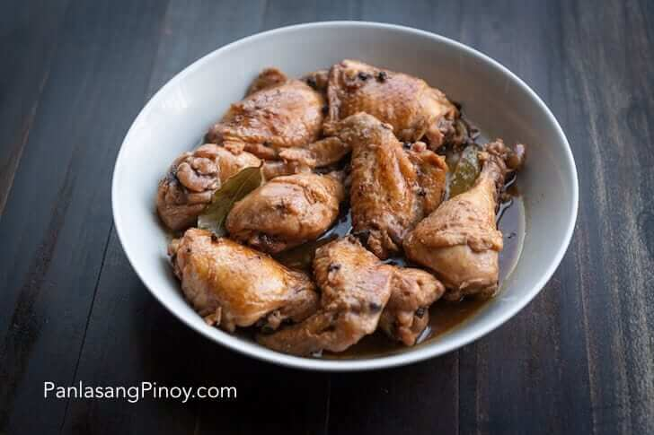

Chicken Adobo

Ingredients
- 2 lbs chicken sliced into serving pieces
- 1 piece Knorr Chicken Cube
- 1 head garlic crushed
- 6 tablespoons white vinegar
- 6 tablespoons soy sauce
- 1 1/2 teaspoons whole peppercorn
- 5 pieces dried bay leaves
- 1/2 cup water
- 1 teaspoon sugar
- 4 tablespoons cooking oil
Steps
- Combine chicken, 1/4 of the total amount of garlic, whole peppercorn, dried bay leaves, soy sauce, vinegar, and water in a cooking pot. Cover and let boil. Stir and make sure that all ingredients are well blended.
- Add Knorr Chicken Cube and sugar. Stir. Cover the pot and cook for 10 minutes.
- Turn the chicken over and cook the opposite side for another 10 minutes. Set aside.
- Heat oil in a clean pan. Saute remaining garlic until it turns light brown.
- Pan fry the chicken for 1 minute per side. Pour the adobo sauce into the pan. Boil until it reduces to half.
- Transfer to a serving plate. Serve with warm rice.
Back to top | Home